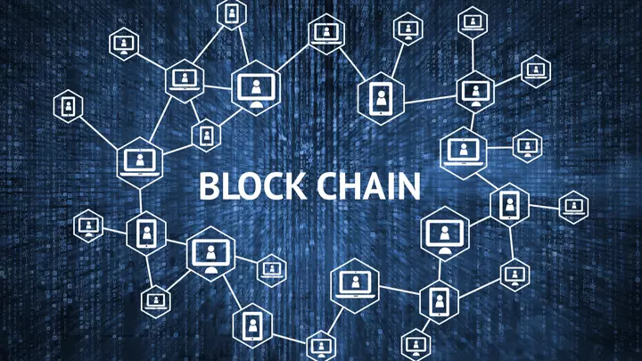

O que é blockchain e como ela funciona?
Blockchain é uma tecnologia revolucionária que surgiu em 2009, junto com a criação da criptomoeda Bitcoin.
Desde então, tem sido cada vez mais utilizada em diversos setores, desde finanças até logística e saúde.
Mas afinal, o que é blockchain e como ela funciona?
De forma simples, o blockchain é uma rede descentralizada de computadores que permite a criação e
compartilhamento de registros digitais, chamados de blocos. Esses blocos são interligados de forma
sequencial e formam uma corrente, ou chain, de blocos, daí o nome blockchain.
Mas o que torna essa tecnologia tão especial? É a sua natureza descentralizada e segura.
Ao contrário dos sistemas centralizados, onde um único servidor ou instituição é responsável
pelo armazenamento e gerenciamento de dados, o blockchain é uma rede distribuída,
onde cada nó (computador) da rede tem uma cópia do registro completo de todas as
transações que já ocorreram na rede.
Isso significa que não existe um único ponto de falha ou controle centralizado na rede.
Cada transação é validada e confirmada pela rede de nós, antes de ser adicionada ao registro.
Isso garante que a informação armazenada no blockchain seja transparente, imutável e resistente a fraudes.
O funcionamento do blockchain é baseado em um algoritmo de consenso, que é um conjunto de regras que determinam
como a rede valida e confirma as transações. No caso do Bitcoin, por exemplo,
o algoritmo de consenso utilizado é o Proof of Work (Prova de Trabalho),
que exige que os nós da rede realizem cálculos matemáticos complexos para validar as transações e adicionar blocos à cadeia.
Além do Proof of Work, existem outros algoritmos de consenso, como o Proof of Stake (Prova de Participação),
que é utilizado em outras criptomoedas e redes blockchain.
Uma vez que os blocos são adicionados à cadeia, eles se tornam imutáveis e permanentes.
Isso significa que todas as transações e informações armazenadas no blockchain podem ser rastreadas e verificadas,
o que aumenta a transparência e a confiabilidade da rede.
O uso do blockchain não se limita apenas às criptomoedas. Essa tecnologia também
pode ser utilizada em diversas outras áreas, como por exemplo:
-
Logística: para rastrear a origem e o destino de produtos, aumentando a transparência e segurança nas transações;
-
Saúde: para armazenar e compartilhar informações médicas de forma segura e transparente;
-
Votação eletrônica: para garantir a integridade e transparência das eleições;
-
Energia: para permitir a venda e troca de energia entre consumidores em uma rede descentralizada.
Em resumo, o blockchain é uma tecnologia inovadora que oferece uma nova maneira de armazenar e
compartilhar informações de forma segura, transparente e imutável. Com sua natureza descentralizada e
resistente a fraudes, o blockchain tem o potencial de transformar diversos setores, desde finanças até logística e saúde.
